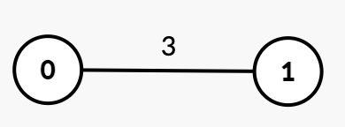
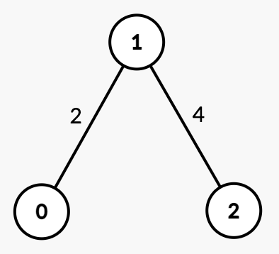
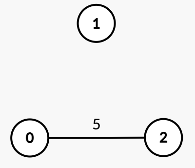

| Category | Difficulty | Likes | Dislikes |
|---|---|---|---|
| Algorithms | Medium | 109 | 6 |
binary-search | union-find | graph | sorting
phonepe | amazon
You are given an integer n and an undirected graph with n nodes labeled from 0 to n - 1. This is represented by a 2D array edges, where edges[i] = [ui, vi, timei] indicates an undirected edge between nodes ui and vi that can be removed at timei.
You are also given an integer k.
Initially, the graph may be connected or disconnected. Your task is to find the minimum time t such that after removing all edges with time <= t, the graph contains at least k connected components.
Return the minimum time t.
A connected component is a subgraph of a graph in which there exists a path between any two vertices, and no vertex of the subgraph shares an edge with a vertex outside of the subgraph.
Example 1:
Input: n = 2, edges = [[0,1,3]], k = 2
Output: 3
Explanation:

{0, 1}.time = 1 or 2, the graph remains unchanged.time = 3, edge [0, 1] is removed, resulting in k = 2 connected components {0}, {1}. Thus, the answer is 3.Example 2:
Input: n = 3, edges = [[0,1,2],[1,2,4]], k = 3
Output: 4
Explanation:

{0, 1, 2}.time = 2, edge [0, 1] is removed, resulting in two connected components {0}, {1, 2}.time = 4, edge [1, 2] is removed, resulting in k = 3 connected components {0}, {1}, {2}. Thus, the answer is 4.Example 3:
Input: n = 3, edges = [[0,2,5]], k = 2
Output: 0
Explanation:

k = 2 disconnected components {1}, {0, 2}, no edge removal is needed. Thus, the answer is 0.
Constraints:
1 <= n <= 1050 <= edges.length <= 105edges[i] = [ui, vi, timei]0 <= ui, vi < nui != vi1 <= timei <= 1091 <= k <= n